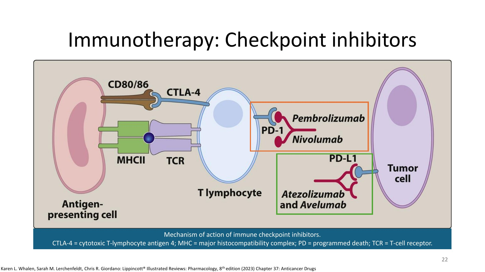
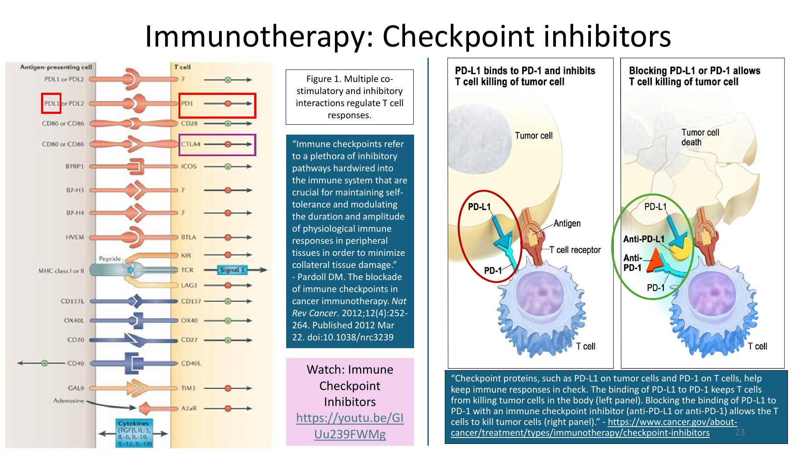
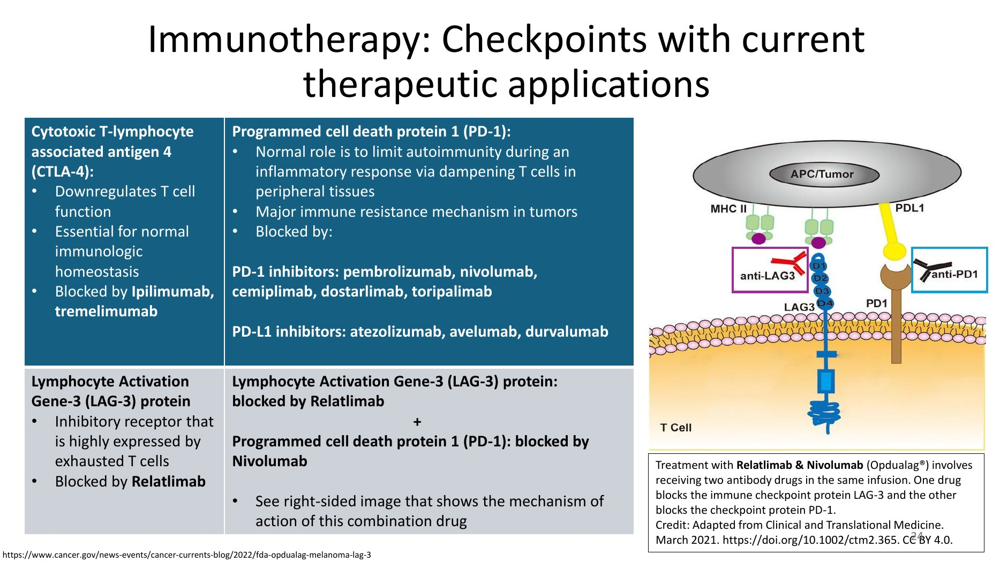
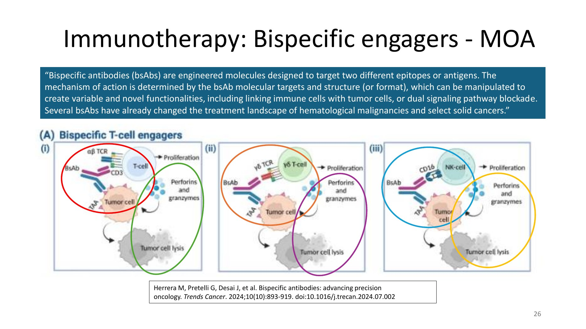
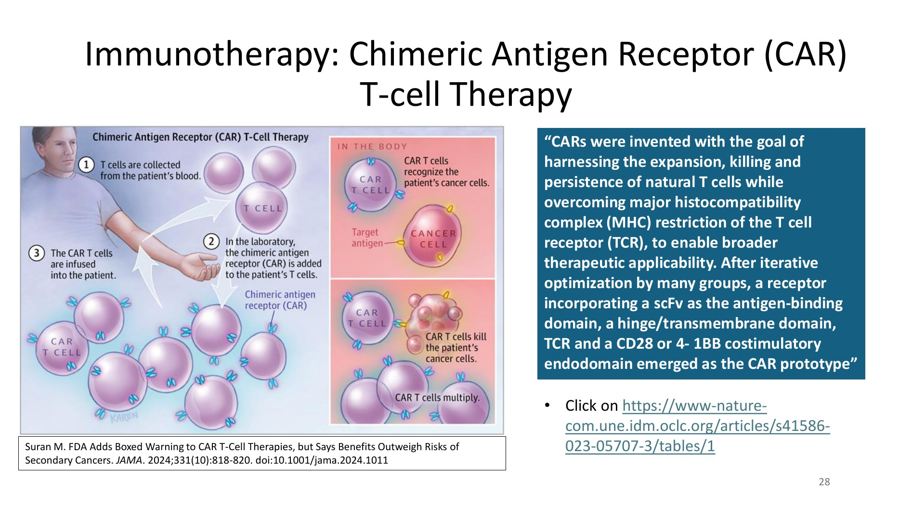
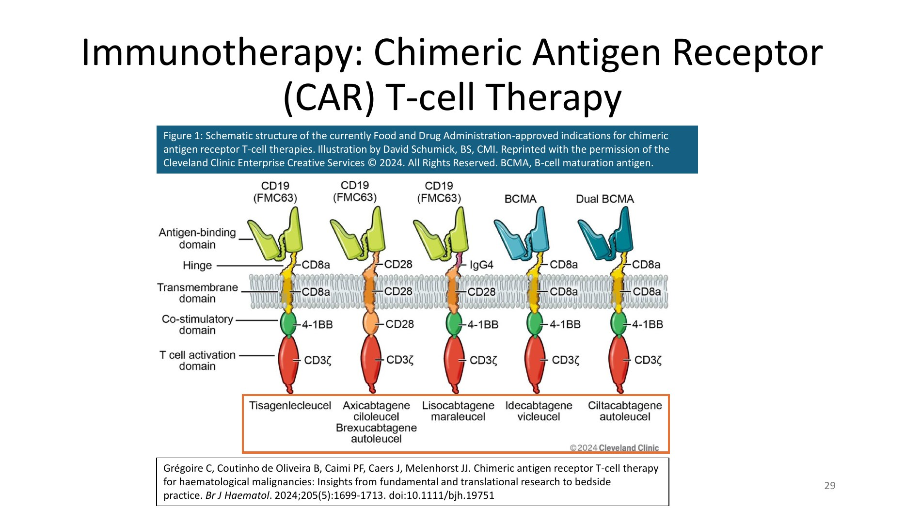
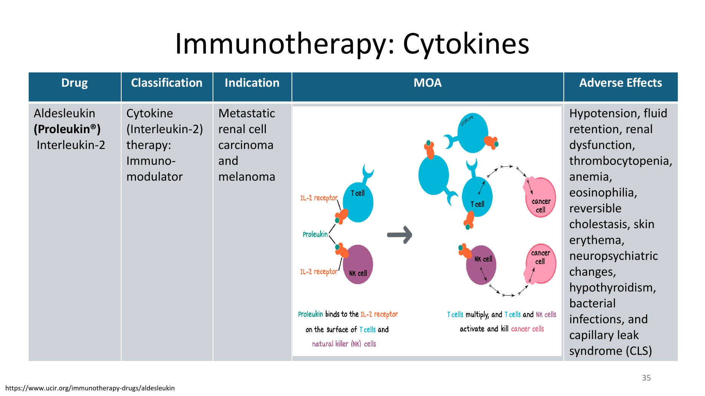

Part 2 · Slides 19–29, 33–36
Immunotherapy — The Seven Categories
Where targeted therapy hands the tumour a poison addressed to it, immunotherapy hands the immune system the tumour's address. The deck lists seven main categories, and it is worth holding the list in view because the toxicity of each follows directly from how much immune activity it releases.
- Cytotoxicity — complement-dependent cytotoxicity (CDC), complement-dependent cell-mediated cytotoxicity (CDCC) and antibody-dependent cellular cytotoxicity (ADCC)
- Checkpoint inhibitors
- Bispecific engagers
- Chimeric antigen receptor (CAR) T-cells
- Vaccines
- Viruses
- Cytokines — and others
1 · Monoclonal antibodies working through CDC, CDCC and ADCC
![Schematic of antibody action by immune mechanisms on a target tumour cell: C1q binding the antibody CH2 region to trigger the classical complement cascade and membrane attack complex for complement-dependent cytotoxicity; C3b acting as opsonin binding C3b receptors on macrophages and natural killer cells for complement-dependent cell-mediated cytotoxicity; and Fc-gamma-RIIIa engagement of macrophages and natural killer cells producing phagocytosis and lysis for antibody-dependent cellular cytotoxicity](img/antineoplastics/mabs-cdc-cdcc-adcc.jpg)
| Mechanism | Stands for | How it kills the tumour cell |
|---|---|---|
| CDC | Complement-dependent cytotoxicity | C1q binds the CH2 constant region of the bound antibody → activates the classical complement pathway → forms the membrane-attack complex (MAC) → lysis |
| CDCC | Complement-dependent cell-mediated cytotoxicity | C3b, generated during that cascade, acts as an opsonin and engages the C3b receptor (C3bR) on a macrophage or natural killer cell → phagocytosis and cytolysis |
| ADCC | Antibody-dependent cellular cytotoxicity | Immune effector cells (macrophages, natural killer cells) engage the CH3 region through Fcγ receptor IIIa → antibody-coated tumour cells are phagocytosed by macrophages or lysed by natural killer cells |
| Negative regulation: FcγRIIb on the macrophage surface dampens the cytotoxic response. IgG1 and IgG3 activate the classical complement pathway and bind Fcγ receptors more potently than IgG2 or IgG4; IgG4 cannot activate the classical complement pathway at all. | ||
| Receptor / target | Drugs | Tumour type | General toxicities |
|---|---|---|---|
| CD20 | Rituximab, ofatumumab, obinutuzumab | B-cell lymphoma | Infusion-related reactions; myelosuppression; infections |
| CD38 | Daratumumab | Myeloma | Infusion-related reactions; myelosuppression; infections; interference with cross-matching and red-cell antibody screening |
| CD19 | Tafasitamab | B-cell lymphoma | Infusion-related reactions; myelosuppression; infections |
CD38 is expressed on red blood cells, so daratumumab coats them and causes interference with cross-matching and red-cell antibody screening — a panreactive indirect antiglobulin test that can mask a genuine alloantibody. Blood bank must be told the patient is on daratumumab, and a baseline type-and-screen should ideally be obtained before the first dose. This is the one toxicity unique to daratumumab in the table and therefore the one worth remembering.
2 · Checkpoint inhibitors

Immune checkpoints are, in Pardoll's definition quoted on the slide, “a plethora of inhibitory pathways hardwired into the immune system that are crucial for maintaining self-tolerance and modulating the duration and amplitude of physiological immune responses in peripheral tissues in order to minimise collateral tissue damage.” Tumours exploit them; checkpoint inhibitors release them.

| Checkpoint | Normal role | Blocked by |
|---|---|---|
| CTLA-4 Cytotoxic T-lymphocyte associated antigen 4 | Downregulates T-cell function; essential for normal immunologic homeostasis | Ipilimumab, tremelimumab |
| PD-1 Programmed cell death protein 1 | Limits autoimmunity during an inflammatory response by dampening T cells in peripheral tissues. It is the major immune resistance mechanism in tumours | PD-1 inhibitors: pembrolizumab, nivolumab, cemiplimab, dostarlimab, toripalimab |
| PD-L1 Programmed death-ligand 1 | The tumour-side ligand for PD-1 | PD-L1 inhibitors: atezolizumab, avelumab, durvalumab |
| LAG-3 Lymphocyte activation gene-3 protein | Inhibitory receptor highly expressed by exhausted T cells | Relatlimab — given with nivolumab in a single infusion (Opdualag®), blocking LAG-3 and PD-1 together |

-limumab → CTLA-4 (ipilimumab, tremelimumab) and LAG-3 (relatlimab). -lizumab / -limab in the PD-1 group → pembrolizumab, nivolumab, cemiplimab, dostarlimab, toripalimab. PD-L1 blockers all end in -olizumab or -umab: atezolizumab, avelumab, durvalumab. The reliable discriminator is the target list, not the suffix — memorise the three PD-L1 drugs (atezolizumab, avelumab, durvalumab) and assume the rest of the checkpoint antibodies are PD-1.
3 · Bispecific engagers

Bispecific antibodies (bsAbs) are engineered molecules designed to target two different epitopes or antigens. The mechanism is determined by the targets and the structural format, which can be manipulated to produce novel functions — including linking immune cells with tumour cells, or dual signalling pathway blockade.
| Drug | Epitope A (cancer cell) | Epitope B (T cell) | Tumour type |
|---|---|---|---|
| Blinatumomab | CD19 on malignant B cells | CD3 | Acute lymphoblastic leukaemia (ALL) |
| Teclistamab | BCMA — B-cell maturation antigen | CD3 | Multiple myeloma |
| Mosunetuzumab | CD20 on lymphoma cells | CD3 | B-cell lymphomas |
| Epcoritamab | CD20 on lymphoma cells | CD3 | B-cell lymphomas |
| Glofitamab | CD20 on cancerous B cells | CD3 | B-cell lymphomas |
| Tebentafusp (Kimmtrak®) Unique mechanism: an ImmTAC — immune-mobilising monoclonal T-cell receptor against cancer | gp100/HLA-A*02:01 complex on uveal melanoma cells | HLA-directed CD3 | HLA-A*02:01-positive metastatic uveal melanoma |
Every other engager in the table has an antibody arm binding a surface antigen. Tebentafusp uses a T-cell receptor arm instead, which lets it recognise an intracellular peptide (gp100) presented on HLA-A*02:01. That is why the patient must be HLA-typed before treatment — an unusual pharmacogenomic gate, and exactly the kind of detail an exam likes.
4 · Chimeric antigen receptor (CAR) T-cell therapy

- T cells are collected from the patient's blood.
- In the laboratory, the chimeric antigen receptor is added to the patient's T cells.
- The CAR T cells are infused back into the patient, where they recognise the target antigen on cancer cells, kill them, and multiply.
The design goal, in the quoted passage: harness the expansion, killing and persistence of natural T cells while overcoming major histocompatibility complex (MHC) restriction of the T-cell receptor, to enable broader therapeutic applicability. The prototype receptor incorporates an scFv as the antigen-binding domain, a hinge/transmembrane domain, and a CD28 or 4-1BB costimulatory endodomain.

| Product | Antigen target | Hinge / transmembrane | Costimulatory domain | Activation domain |
|---|---|---|---|---|
| Tisagenlecleucel | CD19 (FMC63) | CD8a / CD8a | 4-1BB | CD3ζ |
| Axicabtagene ciloleucel · Brexucabtagene autoleucel | CD19 (FMC63) | CD28 / CD28 | CD28 | |
| Lisocabtagene maraleucel | CD19 (FMC63) | IgG4 / CD28 | 4-1BB | |
| Idecabtagene vicleucel | BCMA | CD8a / CD8a | 4-1BB | |
| Ciltacabtagene autoleucel | Dual BCMA | CD8a / CD8a | 4-1BB |
Secondary malignancies. The FDA added a boxed warning to CAR T-cell therapies for the risk of secondary cancers, while stating that the benefits outweigh the risks. This is a 2024 change and is exactly the kind of recent regulatory update that shows up on exams.
5–7 · Vaccines, viruses, cytokines and others
| Category | Drug | Classification | Indication | Adverse effects |
|---|---|---|---|---|
| Vaccine | Sipuleucel-T | Autologous cellular immunotherapy | Asymptomatic or minimally symptomatic metastatic castrate-resistant prostate cancer | Infusion-related reactions, chills, fatigue, back pain, nausea, joint ache, headache |
| Virus | Talimogene laherparepvec (IMLYGIC®) | Oncolytic viral therapy from herpes simplex virus type 1 | Melanoma | Fatigue, chills, pyrexia, nausea, influenza-like illness, injection-site pain. Cellulitis is the most common severe reaction |
| Cytokine | Aldesleukin (Proleukin®) | Interleukin-2 therapy — immunomodulator | Metastatic renal cell carcinoma and melanoma | Hypotension, fluid retention, renal dysfunction, thrombocytopenia, anaemia, eosinophilia, reversible cholestasis, skin erythema, neuropsychiatric changes, hypothyroidism, bacterial infections, and capillary leak syndrome (CLS) |
| Other | Thalidomide, lenalidomide, pomalidomide | Immunomodulating agent | Multiple myeloma | Thromboembolism, myelosuppression, fatigue, rash, constipation. Contraindicated in pregnancy |
| Other | Bortezomib, ixazomib, carfilzomib | Proteasome inhibitor | Multiple myeloma | Neuropathy (less with subcutaneous than intravenous administration), myelosuppression, diarrhoea, nausea, fatigue, herpes zoster reactivation |
Mechanism of the proteasome inhibitors: inhibiting proteasomes prevents the degradation of proapoptotic factors, which promotes programmed cell death (apoptosis).

Aldesleukin → capillary leak syndrome. Interleukin-2 makes the endothelium leak; the patient becomes hypotensive and third-spaces fluid. Thalidomide / lenalidomide / pomalidomide → thromboembolism, and contraindication in pregnancy. The teratogenicity is the historical reason these drugs are dispensed under strict pregnancy-prevention programmes.
Q: A patient with metastatic melanoma receives an antibody combination in a single infusion that blocks two different checkpoints. Name the drugs and the checkpoints.
Relatlimab + nivolumab (Opdualag®). Relatlimab blocks LAG-3 — lymphocyte activation gene-3 protein, an inhibitory receptor highly expressed by exhausted T cells. Nivolumab blocks PD-1 — programmed cell death protein 1. Two antibody drugs, two checkpoints, one infusion.
Q: Blinatumomab and tisagenlecleucel both target CD19 in B-cell malignancy. What is the fundamental difference in how they work?
Blinatumomab is a bispecific T-cell engager — an off-the-shelf antibody construct that physically bridges CD19 on the malignant B cell to CD3 on any passing T cell, recruiting the patient's existing, unmodified T cells. Tisagenlecleucel is a CAR T-cell product — the patient's own T cells are collected, genetically engineered ex vivo to express a chimeric antigen receptor (anti-CD19 scFv + CD8a hinge/transmembrane + 4-1BB costimulatory + CD3ζ activation domain), and re-infused, where they proliferate. A drug versus a living cell product.
Q: Why does an IgG4 monoclonal antibody make a poor choice when the intended mechanism is complement-dependent cytotoxicity?
Because IgG4 cannot activate the classical complement pathway. Complement-dependent cytotoxicity requires C1q to bind the antibody's CH2 constant region and trigger the cascade to the membrane-attack complex. IgG1 and IgG3 do this potently and also bind Fcγ receptors well — which is why most approved therapeutic monoclonal antibodies are IgG1. (IgG4 is used deliberately for checkpoint inhibitors, where you specifically do not want to lyse the T cell you are trying to activate.)